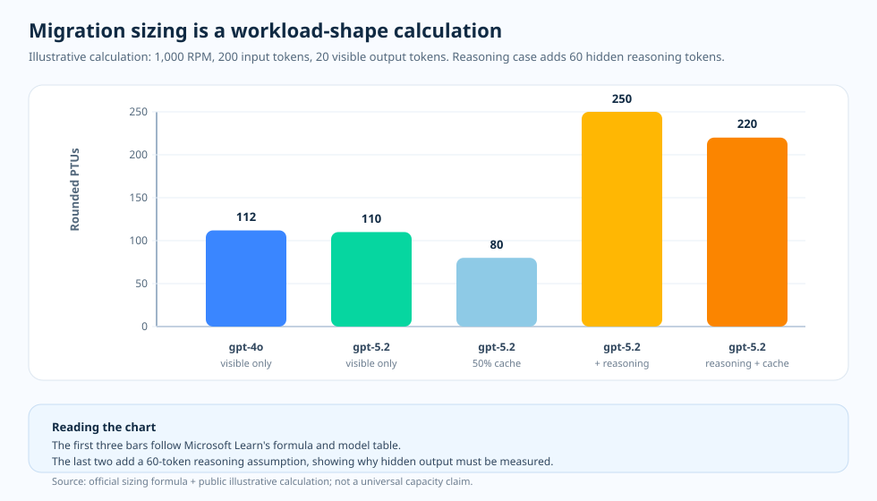

운영 에세이 · GPT-4o에서 GPT-5.x로의 사이징
추론 마이그레이션 사이징: 모델 이름이 아니라 측정
어떤 팀이 gpt-4o 트래픽을 GPT-5.x 추론 모델로 옮기려 하고, 새
배포에 쓸 PTU 숫자가 필요합니다. 반사적으로 이미 잘 돌아가는 것을
재사용하려 합니다. 기존 gpt-4o PTU 크기를 그대로 가져가거나,
거기에 제품군 수준의 “5.x” 배수를 적용하는 식입니다. 모델 이름에 다시
사이징할 만한 정보가 충분히 담겨 있으리라는 가정입니다. 하지만 PTU
사이징을 좌우하는 것은 모델 이름이 아니라 토큰 형태입니다 — 프롬프트
크기, 보이는 출력, 숨은 추론 토큰, 캐시 적중률, 응답 상한이 모두 결과를
움직입니다. 그래서 이름만으로 사이징하려는 직관은 곧장 이 글이 던지는 운영
질문과 부딪힙니다 — 모델 이름이면 충분한가요, 아니면 요청 형태를
먼저 다시 측정해야 하나요?
max_output_tokens)이
워크로드가 확보하는 PTU를 좌우할 수 있는지는, 이 저장소에서 문서화된
플랫폼 동작이 아니라 검증해야 할 수용 위험 가설로 다룹니다. 이 한 장
요약은 그 한 가지 메시지만 전하고 경계를 분명히 표시합니다. 측정된
용량이 아니라, 고정된 가격 스냅샷을 적용한 모델링된 워크로드에 대한 합성
예시입니다.
마이그레이션 사이징 한 장 요약 SVG 열기.

옛 사이즈 재사용 대신 다시 측정하는 이유
재사용 반사 동작은 모델 이름이 곧 사이즈를 담고 있다고 — 잘
돌아가는 gpt-4o 숫자에 제품군 배수를 곱하면 GPT-5.x에도
여전히 맞으리라고 — 전제합니다. 그 전제를 받아들이기 전에 두 가지를
나란히 놓아 볼 만합니다. 첫째는 문서가 명시하는 내용입니다. Microsoft
Learn은 피크 RPM, 평균 프롬프트·출력 토큰, 캐시 적중률, 모델의 출력 대
입력 비율, PTU당 Input TPM으로 트래픽을 정규화 TPM으로 변환하고, 캐시된
프롬프트 토큰을 사용률에서 차감합니다. OpenAI는 추론 토큰을
output_tokens_details.reasoning_tokens에 보고되는, 보이지
않는 출력 측 토큰으로 문서화합니다. 둘째는 이 저장소의 예시용 계산으로,
그 문서화된 공식을 하나의 예시 호출 형태에 돌려 사이징 동인들을 나란히
보여 줍니다 — 어떤 배포를 측정한 것이 아닙니다.
잠시 멈춰 볼 부분은 그 짝짓기입니다. 보이는 출력만으로 읽으면
마이그레이션은 감당할 만해 보일 수 있습니다 — 같은 프롬프트와 같은
보이는 답변은 더 새 모델에서 비슷한 수준으로, 심지어 약간 더 가볍게
사이징될 수도 있습니다. 하지만 보이는 답변이 요청의 전부는 아닙니다. 숨은
추론 출력이 나타나는 순간 같은 답변이 훨씬 더 많은 정규화 TPM을 필요로 할
수 있고, 이 저장소의 작업 가설은 — 문서화된 플랫폼 동작이 아니라
검증해야 할 수용 위험으로 — 과도하게 큰 max_output_tokens
상한이 그 토큰이 실제로 생성되든 아니든 수용 가중치를 예약할 수 있다는
것입니다. 그래서 운영의 질문은 “새 모델이 더 무거운가?”가 아니라 “측정된
요청 형태 — 보이는 출력, 추론 출력, 캐시 적중률, 응답 상한 —
가 실제로 무엇을 예약하는가?”입니다. 정규화 TPM 공식, 모델별 표, 캐시
차감, 추론 토큰 회계는 Microsoft Learn과 OpenAI가 문서화하는 내용이고,
과도하게 큰 max_output_tokens를 검증해야 할 PTU 수용 위험으로
다루는 것은 이 저장소가 옹호하는 운영적 추론입니다. 이어지는 차트는
고정된 가격 스냅샷을 적용한 모델링된 워크로드에 대한 합성 예시이며
— 측정된 용량도, 실시간 PTU 처리량도, SLA도 아닙니다. 아래 예시
차트가 사이징 동인을 명시적으로 보여 줍니다.
질문
GPT-4o 워크로드를 PTU의 GPT-5.x용으로 사이징하기 전에 무엇을 다시 측정해야 하나요?
근거
Microsoft Learn은 정규화 TPM 공식을 제공하고, OpenAI는 추론 토큰 회계 방식을 문서화합니다.
결정
"5.x"에 대한 제품군 수준의 가정이 아니라, 측정된 토큰 형태를 기준으로 사이징하세요.
공식 동작 · 정규화 TPM
사이징 공식의 핵심: 토큰 형태
Microsoft Learn은 트래픽을 정규화 TPM으로 변환하여 PTU 수요를 산정합니다. 입력값은 피크 RPM, 평균 prompt 토큰, 평균 생성 출력 토큰, 캐시 적중률, 모델의 출력 대 입력 비율, 그리고 모델의 PTU당 Input TPM 값입니다.
공식:
normalized_tpm = rpm × (prompt_tokens × (1 - cache_rate) + output_ratio × output_tokens)
raw_ptu = normalized_tpm ÷ input_tpm_per_ptu
이 공식이 바로 제품군 수준의 지름길이 오해를 부르는 이유입니다. 어떤 모델은 출력 비율이 더 무거우면서도 이전 모델보다 PTU당 Input TPM이 더 높을 수 있습니다. 답은 여러분 워크로드의 실제 prompt, 출력, 캐시 프로필에 달려 있습니다.
운영 관점 · 마이그레이션에서 바뀌는 것
마이그레이션 적합성을 결정하는 네 가지 동인
1. 출력 가중치
GPT-4.1 이후 모델의 경우, Microsoft Learn은 출력 토큰이 사용률 산정에서 모델별 입력 토큰 가중치를 갖는다고 설명합니다.
2. 숨은 추론
OpenAI는 추론 토큰을 보이지 않는 출력 측 토큰으로 문서화합니다. output_tokens_details.reasoning_tokens에서 측정하세요.
3. 캐시 적중률
Microsoft Learn은 캐시된 prompt 토큰이 PTU 사용률에서 차감된다고 설명합니다. 따라서 프리픽스 형태의 변화가 사이징 결과를 움직일 수 있습니다.
4. 응답 상한
max_output_tokens를 기록하세요. 이 저장소는 과도하게 큰 상한을 추측할 값이 아니라, 검증해야 할 PTU 수용 위험 가설로 취급합니다.
예시 계산 · 보이는 출력이 같은 워크로드
답을 바꿀 수 있는 숨은 출력

| 행 | 모델 | 캐시 적중률 | 생성 출력 가정 | 반올림 PTU |
|---|---|---|---|---|
| 보이는 출력 기준선 | gpt-4o | 0% | 출력 토큰 20개 | 115 |
| 보이는 출력 마이그레이션 | gpt-5.2 | 0% | 출력 토큰 20개 | 110 |
| 보이는 출력 마이그레이션 + 캐시 | gpt-5.2 | 50% | 출력 토큰 20개 | 80 |
| 추론 마이그레이션 | gpt-5.2 | 0% | 보이는 20개 + 추론 60개 토큰 | 250 |
| 추론 마이그레이션 + 캐시 | gpt-5.2 | 50% | 보이는 20개 + 추론 60개 토큰 | 220 |
이것이 의미하는 바
보이는 출력만 다룬 행들은 GPT-5.x가 항상 GPT-4o보다 비효율적이라는 일괄적인 주장을 뒷받침하지 않습니다. 추론 행들은 함정을 보여줍니다. 일단 숨은 추론 출력이 나타나면, 캐시와 응답 정책을 측정하고 조정하지 않는 한 동일한 보이는 답변이 훨씬 더 많은 정규화 TPM을 필요로 할 수 있습니다.
운영자 체크리스트 · 용량 구매 전에 다시 측정
마이그레이션 실행: 이름 변경이 아니라 측정
- 작업 구성을 고정하세요. prompt, 도구, 스키마, 검색 배치, 샘플 분포를 모델 셀 전반에서 바이트 단위로 안정되게 유지하세요.
- 보이는 출력을 측정하세요. 마이그레이션 전후의 평균 및 p95 보이는 출력 토큰을 비교하세요.
- 추론 출력을 측정하세요.
reasoning_tokens를 수집하세요. 최종 답변 텍스트로부터 추정하지 마세요. - 캐시 적중률을 측정하세요. 캐시 키 버킷별로
cached_tokens / prompt_tokens를 기록하세요. 특히 ReAct나 도구 스키마 변경 이후에 그렇습니다. - 상한을 적정 크기로 맞추세요. 대표적인 보이는 + 추론 백분위수를 기준으로
max_output_tokens를 설정한 다음, 드물게 발생하는 긴 답변에는 호출별 재정의를 사용하세요. - 그런 다음에만 PTU를 사이징하세요. 현재 모델 표와 여러분이 측정한 워크로드 형태로 정규화 TPM 공식을 적용하세요.
출처와 근거 경계
Tier 1 — 서비스 계약(Microsoft Learn 및 OpenAI). 정규화 TPM 사이징 공식, 모델별 PTU당 Input TPM과 출력 대 입력 비율, GPT-4.1 이후의 출력 토큰 가중치, 사용률에서의 100% 캐시 차감, 그리고 추론 토큰 회계 방식이 여기에 문서화되어 있습니다.
- Determine PTU sizing for a workload — 정규화 TPM 계산(Input TPM = 피크 RPM × prompt 크기; Output TPM = 피크 RPM × 응답 크기; 정규화 TPM = input TPM × (1 − 캐시 적중률) + 출력 대 입력 비율 × output TPM; PTU = 정규화 TPM ÷ PTU당 Input TPM), 모델별 PTU당 Input TPM과 출력 대 입력 비율 값, 그리고 캐시된 토큰이 사용률 계산에서 100% 차감된다는 점을 정의합니다. Microsoft Learn 문서 (2026-06-05 접근) · 아카이브.
- What is provisioned throughput for Foundry Models? — PTU 사용률 모델과 요청 형태가 예약된 용량을 어떻게 소비하는지를 문서화합니다. Microsoft Learn 문서 (2026-06-04 접근) · 아카이브.
- Prompt caching with Azure OpenAI — 캐시된 prompt 토큰이 사용률에서 차감되므로, 프리픽스 형태의 변화가 사이징 결과를 움직인다는 점을 문서화합니다. Microsoft Learn 문서 (2026-06-04 접근) · 아카이브.
- OpenAI reasoning models guide — 추론 토큰을
output_tokens_details.reasoning_tokens에 보고되는 보이지 않는 출력 측 토큰으로 문서화합니다. OpenAI 문서 (2026-06-04 접근) · 아카이브.
Tier 2 — 운영적 추론(이 저장소). 과도하게 큰
max_output_tokens를 PTU 수용 위험 가설로 다루는 것과, 추론
및 캐시된 토큰의 측정 계약은 Learn 사양이 아니라 이 저장소의 운영적
추론입니다.
- 이 저장소,
docs/13-ptu-vs-payg-decision-runbook.md—mean_max_output_tokens를 기록하고, 큰max_output_tokens를 추측할 값이 아니라 검증해야 할 예약된 수용 가중치로 해석합니다. 출처. - 이 저장소,
docs/14-observability-schema.md—reasoning_tokens,cached_tokens,max_output_tokens_sent를 각각의 소스 usage 필드에 매핑하는 표준 PTU 레코드 계약입니다. 출처.
이 주제가 증명하는 것과 증명하지 못하는 것. 접근일 기준 Microsoft Learn이 명시하는 PTU 사이징 계약 — 정규화 TPM 공식, 모델별 PTU당 Input TPM과 출력 대 입력 비율, GPT-4.1 이후의 출력 토큰 가중치, 그리고 100% 캐시 차감 — 과 OpenAI의 추론 토큰 회계 방식, 그리고 사이징 전에 출력, 추론, 캐시, 상한을 다시 측정하라는 이 저장소의 경험칙을 문서화합니다. 예시 차트는 문서화된 공식을 하나의 예시 호출 형태에 적용한 것으로, 용량 보장이 아니라 계산 예시이며, 특정 GPT-5.x 워크로드가 모든 리전·모델 버전·트래픽 형태에 걸쳐 이전의 GPT-4o보다 더 무겁거나 가볍다는 것을 증명하지는 않습니다.
실무 규칙
실무 규칙: 모델 이름만으로는 워크로드를 사이징할 정보가 충분하지
않으므로, GPT-4o 트래픽을 PTU의 GPT-5.x로 옮기기 전에 출력, 추론, 캐시,
그리고 max_output_tokens 상한 정책을 다시 측정한 다음 정규화
TPM 공식으로 사이징합니다.
이 글로 운영 에세이 묶음이 마무리되고, 흐름은 애초에 어떤 근거가 공개할 만큼 강했는지를 결정한 방법론으로 돌아갑니다.